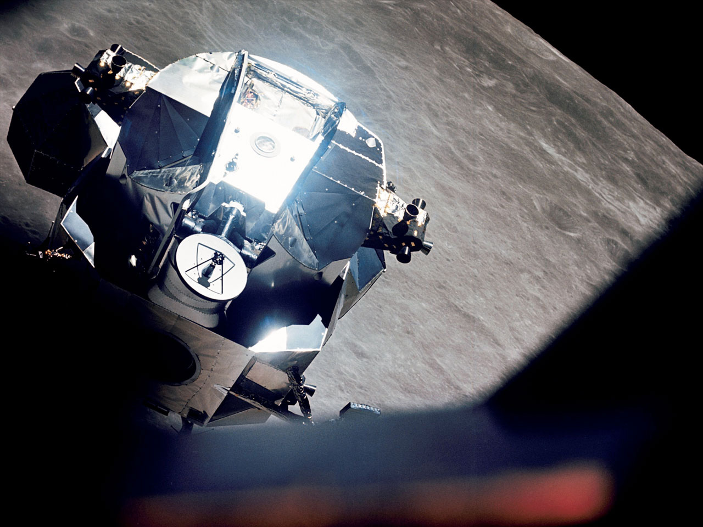

Apollo 10 served as the final dress rehearsal for humanity's first Moon landing. Launched on May 18, 1969, the mission traveled to the Moon and tested every major phase of a landing mission except the actual touchdown. The crew consisted of Commander Thomas Stafford, Command Module Pilot John Young, and Lunar Module Pilot Eugene Cernan.
NASA designed Apollo 10 to eliminate as much uncertainty as possible before Apollo 11. By practicing nearly every step of the landing process, engineers and astronauts could identify and correct any remaining problems.
Apollo 10 launched aboard a Saturn V rocket and followed a trajectory similar to the one later used by Apollo 11. After entering lunar orbit, Stafford and Cernan transferred into the Lunar Module, nicknamed Snoopy, while Young remained aboard the Command Module, Charlie Brown.
The crew carefully prepared for a simulated landing attempt that would bring them closer to the Moon than any humans had ever been.
After separating from the Command Module, Snoopy descended toward the lunar surface. The Lunar Module approached within approximately 9 miles (15 kilometers) of the Moon, close enough for astronauts to examine the terrain in detail.
The crew tested guidance systems, radar equipment, communication systems, and landing procedures. These activities closely mirrored what Apollo 11 would perform two months later.
At one point, a control issue caused the Lunar Module to rotate unexpectedly. Stafford and Cernan quickly regained control and continued the mission successfully, demonstrating the importance of astronaut training and quick decision-making.
After completing the descent tests, Snoopy's ascent stage engine fired, simulating the launch that would later carry lunar astronauts back into orbit. The spacecraft successfully rendezvoused and docked with the Command Module.
The crew then spent additional time photographing potential landing sites and gathering scientific observations before beginning the journey home.
Apollo 10 achieved nearly all of the objectives required before a lunar landing attempt. The mission demonstrated that the Lunar Module could safely descend toward the Moon, return to orbit, and rendezvous with another spacecraft.
Many historians refer to Apollo 10 as the mission that made Apollo 11 possible. By successfully rehearsing the landing sequence, Apollo 10 gave NASA the confidence needed to proceed with humanity's first attempt to land on the Moon.